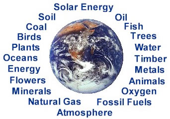
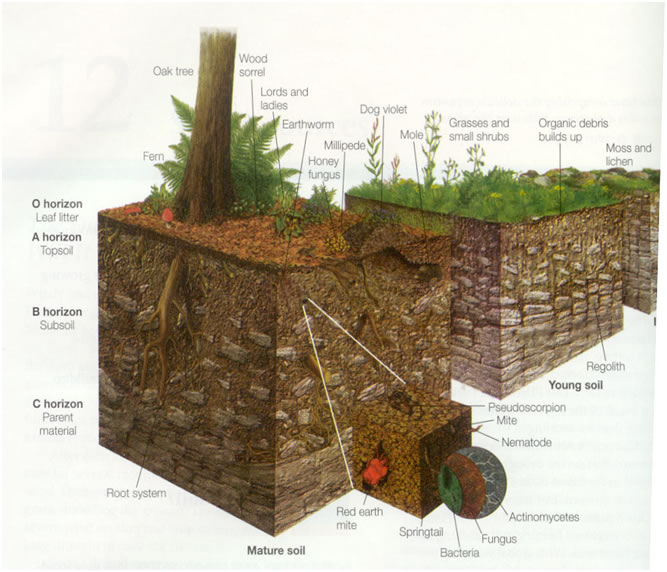
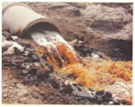
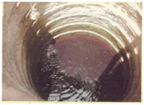
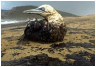
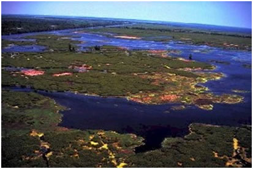

Lecture 02 :: Natural resources: Renewable and Non renewable resources. Land and Water

Natural Resources:
A resource is anything needed by an organism or group of organisms. The sum of all physical, chemical, biological and social factors, which compose the surroundings of man, is referred as environment and each element of these surroundings constitutes a resource on which man draws in order to develop a better life. Resources which are not reproducible and are obtained from the fenite non-living reserves are called non-renewable resources (eg.) Coal and metals.
Any material which can be transformed in a way that it becomes more valuable and useful can be termed as a resource. Thus, only part of our natural environment, such as land, water, air, minerals, forest, rangeland, wildlife, fish or even human population that man can utilize to promote his welfare may be regarded as a natural resource. In the case of humans, a resource is any form of energy of matter essential for the fulfillment of physiological, socio-economic and cultural needs, both at the individual level and that of the community.
The five basic ecological variables - energy, matter, space, time and diversity are sometimes combinedly called natural resources.

Classification of natural resources :
Based on quantity, mutability and reusability schematic representation of classification of natural resources :
Inexhaustible Exhaustible
|
|
|
|
Renewable Non-renewable
|
|
|
|
Based on Continual Utility
- Renewable
- Non renewable
- Cyclic resource
Based on origin
- Biotic and
- Abiotic
Based on Utility
- some as raw materials
- some as energy resources
Renewable resources are those which are reproducible and are obtained from the biomass of living organisms. (Eg.) Forests. Potentially renewable can become nonrenewable resources, if used for a prolonged time at a faster rate than it is renewed by natural processes.
Land
The land although appears to be available unlimited but, infact, its judicious use would limit the availability of this indispensable life support system. In rural land use planning, concentration is chiefly devoted to creating and developing more farmland by removing forests and natural grasslands, channeling streams for irrigation and so on. Unfortunately, no effort is made to save existing prime farmland from degradation by ill planned development.
A nation’s well-being is inextricably linked with the fertility and abundance of soil resources. Productive land is since the source of human sustenance and security everywhere at all times, this resource because of mounting demands of swelling population and long mismanagement would put in jeopardy the very survival of man.
Deteriorating quality of urban and sub urban environment is to a great extent the result of injudicious land use and is a threat to the whole socio economic system. Major problems emerging out of abuse of land in cities include unsafe and unhygienic dwellings and those in rural areas are of erosion of soil and loss of fertility. While urban problems can be prevented and cured by proper town planning and municipal facilities, the problem relating to rural areas need long-term soil conservation programme.
Soil consists of mineral and organic matter, air and water. The proportions vary, but the major components remain the same. Minerals make up 50 per cent of an ideal soil while air and water make up 25 per cent each. Every soil occupies space. Soil extends down into the planet as well as over its surface. Soil has length, breadth, and depth. The concept that a soil occupies a segment of the earth is called the "soil body". a single soil in a soil body is referred to as a "pedon". The soil body is composed of many pedons and thus called a "polypedon".
Every soil has a profile or a succession of layers (horizons) in a vertical section down into the non-soil zone referred to as the parent material. Parent materials can be soft rock, glacial drift, wind blown sediments, or alluvial materials. The nature of the soil profile is important for determining a soil's potential for root growth, storage of water, and supply of plant nutrients.
Soil texture
Relative amounts of the different sizes and types of mineral particles
Soil porosity
A measure of the volume of pores or spaces per volume of soil and the average distances between these pores
Soil permeability
Rate at which water and air move from upper to lower soil layers
Processes of soil formation – 2 stages
1) Weathering
2) Soil development or pedogenesis
- Weathering
- Physical – Wetting- drying, Heating – cooling, Freezing, Glaciations, solution, sand blast
- Chemical - Hydration,Hydrolysis, O/R, Carbonation,Chelation

Soil development
- Pedogenesis – lichens, bacteria, fungi, algae, microarthropods, mollusc – secretion of Organic acids, enzymes,CO2, addition of Organic Matter – leads to soil formation – soil Profile
- Factors affecting soil formation
- Passive Factors – Parent material, topography, time
- Active Factors – Rainfall, Temp, humidity, Wind,
- Biosphere effect (Phytosphere, Zoosphere, MO)
Throughout history, the progress of civilizations has been marked by a trail of wind-blown or water-washed soils that resulted in barren lands. Continuing to use the soil without appropriate soil conservation management is very destructive to the environment. Protecting the quality of our nation's topsoil is largely within human control. To many soil scientists, saving our soil is much more important than saving oil, coal, or natural gas resources.
Water Resources
Water is a vitally important substance in all parts of the environment. Water resources occupy a unique place among other natural sources. It is the most abundant and most widely distributed element in the world. It occupies about three fourths (70%) of the earth’s surface. It occurs in all spheres of the environment – in the oceans as a vast reservoir of saltwater, on land as surface water in lakes and rivers, underground as groundwater in the atmosphere as water vapor, and in the polar icecaps as solid ice. This amounts to a staggering 1400 million cubic kilometer, which is enough to cover the earth with a layer 3000 meters deep. This apparent abundance is, however, misleading and hides an ironical fact which is not always fully appreciated, a mammoth 97.5% of the amount, contained in the world’s oceans and seas, being saline, is unfit for human consumption. We, like many creatures, require fresh water to survive, and that constitute a miserly 2.5 % of the total amount. Of this, about 68.9% lies inaccessible in ice fields and glaciers and another 29.9% is present as groundwater. In effect, only one – hundredth of three per cent (0.03%) of the world’s total supply amounting to some 14 billion cubic meters is considered easily available for human use on a regular basis. This water is found in decreasing order of abundance in saline and freshwater lakes and reservoirs; as soil moisture; as water held in living organisms, as vapor, droplets, and miniscule ice crystals in the atmosphere; in swamps and marshes; and in rivers and streams. The problem would not have been so acute had freshwater been evenly distributed around the globe, throughout the seasons or from year to year. It is not so. Two thirds of the world’s population i.e around 4 billion people lives in areas receiving only one quarter of the world’s annual rainfall.
Freshwater distribution
About three-quarters of annual rainfall come down in areas containing less than one-third of the world’s population. As water –short societies have done for centuries, many countries attempt to move water from where it occurs on nature to where the people want it, and also to store water for future use. Worldwide, there are 40,000 dams higher than 15 mts, most of them built in the last 50 years. Although dams help ensure a steady water supply, they often endanger aquatic systems by blocking river channels, altering water flows of rivers, food plains, deltas, and other natural wetlands, as well as imperiling plant and animal life.
How water is used?
The amount of water that people in a country actually use depends not only on minimum needs and how much water is available for use but also on the level of economic development and the extent of urbanization. Globally, of the three categories of freshwater use- for agriculture, industry and domestic, agriculture dominates. On a worldwide basis, agriculture accounts for about 69% of the annual water withdrawals; industry, about 23% and domestic use, about 8%.
India’s Water Resources Potential
India receives an annual precipitation of about 4000 cu.km. About 1869 cu.km occurs as natural run off in rivers. India has 12 major rivers with a total catchments area of 252.8 million hectare. Of these, the Ganga-Brahmaputra-Meghana system is the biggest with a catchment area of about 110 m.ha. It also provides about 60% of the total amount of freshwater amongst other rivers. Others with catchment areas of more than 10 m.ha are Indus (32.1 m.ha), Godavari (31.3 m.ha.), Krishna (25.9 m.ha.) and Mahanadi (14.2 m.ha.) The national annual per capita availability of water in the country is about 2208 cu.m.
Groundwater
In India groundwater has been used for irrigation and domestic water supply since time immemorial. At present, more than 70% of the population uses groundwater for its domestic needs and more than half of the irrigation is provided from this source. The total replenishable ground water in India is estimated to be about 43.18850 million hectare meter per year. About 7.1 m ha m/yr is used for domestic and industrial use. It is estimated that about 32.47264 m ha m/yr is available for irrigation. About 32% of available groundwater resources have so far been used. There is increasing extraction of groundwater to meet the demands of the agriculture, especially for the cultivation of water intensive crops, like sugarcane. Some 90% of the groundwater extracted is used for irrigation. Today, more than 8.5 million electric and diesel pumps are used to withdraw groundwater leading to falling water tables in most states.
Water scarcity
Years of rapid population growth and increasing water consumption have strained the world’s freshwater resources. In some areas the demand for water already exceeds nature’s supply, and a growing number of countries are expected to face water shortages in the near future.The world’s population, at 6.1 billion is growing by about 80 million people each year. This number implies an increased demand for freshwater of about 64 billion cubic meters a year. A country is said to experience water stress when annual water supplies drop below 1,700 cubic meters per person. Below 1,000 cubic meters per person, the country faces water scarcity. Once a country experiences water scarcity, it can expect chronic shortages of freshwater that threaten food production, hinder economic growth and development, and damage eco system.
In 1995, 31 countries containing 458 million people faced either water stress or scarcity. By 2025, according to projections made by Population Action International, more than 2.8 billion people in 48 countries will be facing water stress or scarcity. By 2050, the number of water short countries soars to 54, affecting 4 billion people, or 40% of the projected global population. The worst hit areas are in the Middle East, North Africa and Sub-Saharan Africa. Over 200 million Sub Saharan Africans already live in water short countries. This figure balloons to 700 million by 2025, of whom over half will live in countries facing severe shortages for most of the year.
World Water Demand/Year
1940 1000 km3
1990 4130 km3
2000 5000 km3
2002 6650 km3
Water scarcity is now the single biggest threat to food production, as falling groundwater levels and shrinking rivers make less water available for agriculture. According to UNEP, India will be water –stressed before 2025-with average annual water availability limited to between 1000 cubic meters to 1700 cu. m per person.
Depletion of water resources
- Shrinking of rivers, lakes & ponds
- Water pollution – 70% of surface water polluted
- Ground water depletion - >10 cm/yr & pollution- NO3
- Increase of sewage & industrial effluents
- India will be water stressed by 2025 (UNEP)
- Per capita water has decreased from 2208 to 1700cu.m in a decade


Management of water implies making the best use available water resources for human benefit while not only preventing and controlling its depletion and degradation but also developing it in view of the present and future needs. Floods, droughts, improper use, pollution, disease transmission are the important problems related to water. Pollution of a body of water is detrimental not only to the human society but also to regional ecology and the ecology of very aquatic system. It is therefore, essential that the water should not be treated as a simple repository of waste disposal, and if inevitable, the water only after proper treatment should be released in it under strict ecological considerations.
Drought
Drought may be caused due to variability of rainfall, delay in onset or early withdrawal of monsoon, duration of break in the monsoon, area differences in persistence of monsoon and human activities. Based on the physical characteristics, drought may be of meteorological drought, hydrological drought, soil-moisture drought, agricultural drought, socio-economic drought, famine and ecological drought.
Combating drought
Planning for drought includes;
- Scientific use of rainfall, surface and underground water.
- Introduction of proper cropping pattern.
- Development of irrigation facilities.
- Development of existing irrigation potential.
- Lining of canals and distributaries to minimize water losses.
- Drip irrigation/Trickle irrigation mainly in saline areas.
- Expeditious completion of continuing projects should be given priority in planning.
- Construction of new irrigation projects.
- Desilting of irrigation tanks.
- Technology of dry farming.
Dams: Today there are more than 45,000 large dams around the world, which play an important role in communities that harness these water resources for their economic development. Current estimates suggest that about 30-40 % of the irrigated land worldwide relies on dams. The world’s two most populous countries China and India – have built around 57% of the world’s large dams. In India, of the 16-18 million people displaced by dams, 40-50% wee tribal people, who account only for 8% of our nations one billion people.
Problems caused by Dams:
- Fragmentation and physical transformation caused by dams
- Serious impact on riverine ecosystems
- Social consequences of large dams due to the displacement of people
- Dislodging animal populations, damaging their habitat and cutting off their migratory routes
- Disruption of fishing and waterway traffic
- The emission of green house gases from reservoirs due to rotting vegetation and carbon inflows from the catchment
| Download this lecture as PDF here |